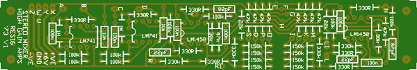
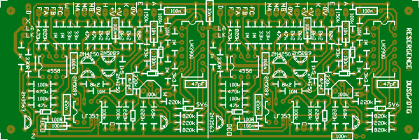
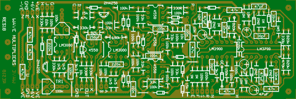
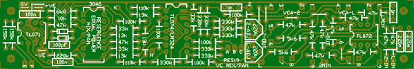
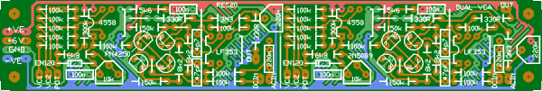

RES16
High Gain Amps and Stereo Mixer/Panner from 1973-1976. The high gain amps are probably the amps used in the Send/Receive module, the "send" being nothing more than a wire link or voltage divider (not proven).
The mixer has two outputs per channel, one inverted from the other. The logical way to wire it would be for the non-inverting outputs to go to the banana socket, and the inverting to the mini or 1/4 inch jack. I guess they could drive a balanced line too, though would need attenuation.
1 unit width

RES17 (tested by RF - see resergence group for notes/corrections)
DUSG/DTG. This board was designed from a schematic alone. A couple of parts of the schematic were a little odd, including a partially wired op-amp. This doesn't mean it's incorrect - just that we haven't had the opportunity to cross check it with an original PCB design.
Unfortunately there are so many components on this board that the power bus had to be dropped.
2 units width

RES18 (tested)
Triple wave multiplier. This board was designed from a schematic alone. A number of parts differed between the two schematics, so there are a number of best guesses. We know the middle section will work, and see no reason why the others shouldn't as well. Minor tweaks will be needed. Of course, if anyone can actually get their hands on one ....
The diode marked GE on the schematic was incorrectly identified as a germanium by one person reverse engineering the board. It is in fact a Zener, probably around 4 to 5 volts, considering that a reverse biased transistor junction is sometimes used in this location.
2 units width

RES19
Equal Power panner, mixer. This board was reverse engineered from the Driscoll Stereo mixer/panner. It represents a single channel and uses two standard serge VCA sub modules to do the mixing or panning. The xfader should be able to be built using just one of these boards. Some modules will require two of these boards while some will require four. At this stage it is not certain that this is the exact circuit used in modules such as the universal audio processor as some photos seem to contradict this. Note that the Equal Power driver usually incorporates two identical units on the one PCB where this board contains only one.
Unfortunately there are so many components on this board that the power bus had to be dropped. The VCA sub modules will need to be mounted higher than usual so they clear the components that are on the PCB directly below them. It may not be the neatest solution, but it sure looks better than the mess of PCBs used in the Driscoll.
2 units effective width

RES20
Driscoll/Serge Dual VCA. This board was reverse engineered from the Driscoll Dual VCA, with reference to the Serge VCA sub-module. The LF353 is very similar to the TL072, and is frequently sold as such in Australia. A UAF772 was used in this position on the Driscoll.
1 unit width
